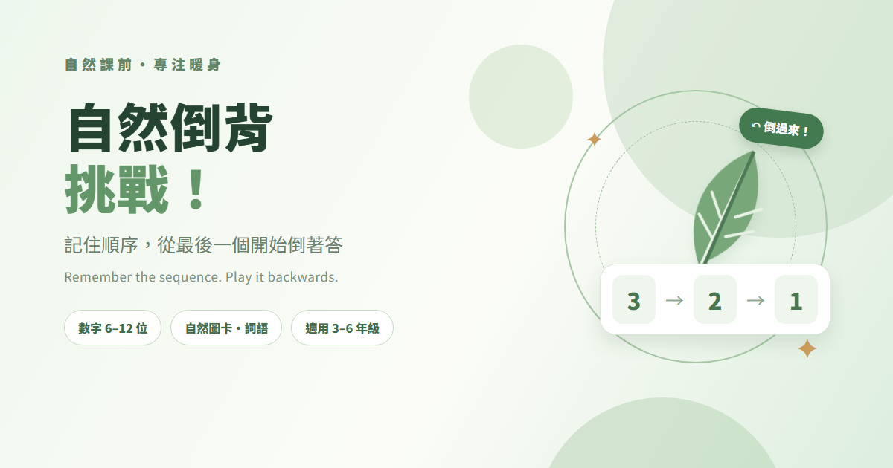

課前專注暖身・國小三至六年級
自然倒背挑戰
Facebook 分享文案
中文、英文可分別複製，也可以一次複製兩篇。貼文縮圖如下。

中文版
自然課前，把注意力倒背回來 🌿
🎒 自然課開始前，先來一場「倒著記」的小挑戰！
看一串數字、自然圖卡或課堂詞語，記住出現順序，接著從最後一個開始倒著回答。短短幾分鐘，讓孩子把眼睛和注意力帶回教室 👀
🌱 數字倒背：從 6 位一路挑戰到 12 位
🦋 自然圖卡：記住植物、動物、天氣等課堂主題
🔎 自然詞語：依年級、出版社與單元挑選題組
✏️ 教師自訂：輸入當天課程詞語，立刻出題
📽️ 大字投影：全班一起看、一起想、一起倒著排
老師可以選練習或五回合挑戰；答錯也沒關係，再看一次、再試一次就好。網站不記名、不排名，讓暖身回到好玩與專注本身。
👉 來玩「自然倒背挑戰」：
https://prayer168.github.io/natural-science-backward-span/
如果你也有一題讓全班瞬間安靜下來的自然詞語，歡迎分享給我！
#自然課 #課前暖身 #數位教材 #互動學習 #國小自然 #黑熊老師
English
A quick brain warm-up before science 🌿
Need a quick way to bring everyone’s attention back into the room before science class? Try a reverse-order challenge! 🎒
Students watch a short sequence of numbers, nature cards, or science words, remember the order, then answer it backwards. It takes just a few minutes and gives the class a focused start. 👀
🌱 Reverse digits: build from 6 up to 12 digits
🦋 Picture cards: recall plants, animals, weather, and more
🔎 Science words: choose topics by grade, publisher, and unit
✏️ Teacher-made rounds: add words from today’s lesson
📽️ Projector mode: make it easy for the whole class to join
Choose practice or a five-round challenge. Getting one wrong is simply a chance to try again. There are no names, leaderboards, or saved scores—just a playful classroom warm-up.
👉 Try Natural Science Backward Span:
https://prayer168.github.io/natural-science-backward-span/
Got a science-word sequence your students would love? Share it with me!
#ScienceClass #ClassroomWarmUp #EdTech #InteractiveLearning #ElementaryScience #TeacherTools
貼文中附有網站連結；縮圖會在分享連結時顯示。